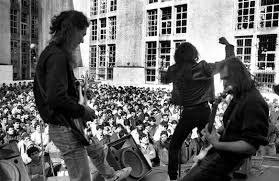

Biografía
Introducción
Shows
Penal de Olmos
El histórico show de Hermética en el Penal de Olmos ocurrió el 17 de agosto de 1993. Fue parte del festival Radio Olmos, considerado el primer festival de rock carcelario en Argentina, organizado para beneficiar a la emisora que funcionaba dentro de la unidad penitenciaria.

Lugar: El escenario se montó en el patio del penal, una de las cárceles con mayor población y de mayor seguridad en la provincia de Buenos Aires.
Público: Alrededor de 700 internos con buena conducta, personal del servicio penitenciario y periodistas acreditados asistieron al evento.
Contexto: El festival fue idea del productor Alejandro Taranto y contó con la participación de otras bandas emblemáticas como Attaque 77, Massacre, Pilsen, Lethal, A.N.I.M.A.L. y los ingleses UK Subs.
Legado: El show de Hermética quedó registrado en el disco en vivo titulado "Radio Olmos", lanzado en 1994, donde se incluyeron temas como "Robó un auto" e "Ideando la fuga".